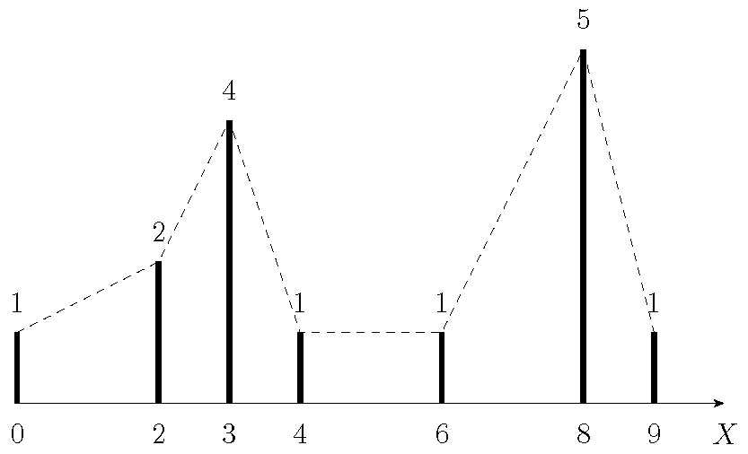

Bài 5.1:
Bảng sau cho các giá trị quan sát được và số lần xuất hiện giá trị đó trong mẫu
| \(X\) | 0 | 2 | 3 | 4 | 6 | 8 | 9 |
| \(n_i\) | 1 | 2 | 4 | 1 | 1 | 5 | 1 |
- Xây dựng biểu đồ tần suất của mẫu đã cho.
- Tính các đặc trưng mẫu \(\overline{x}, s^2, s, s'^2, s'\).
Đáp số:
-

- \(\overline x = 5, s^2 = 8.1333, s{'^2} = 8.7143, s = 2.8519, s' = 2.952\).